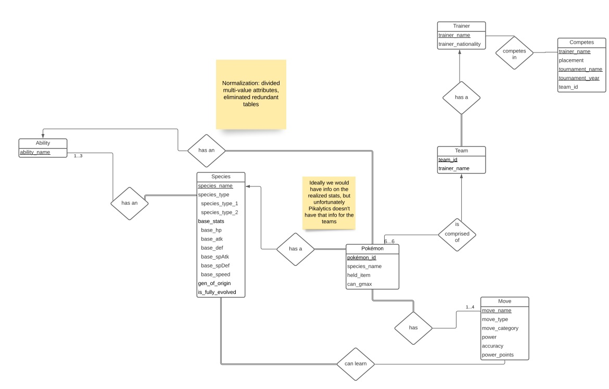
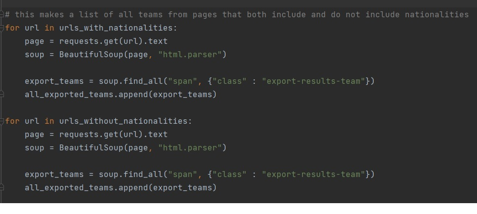
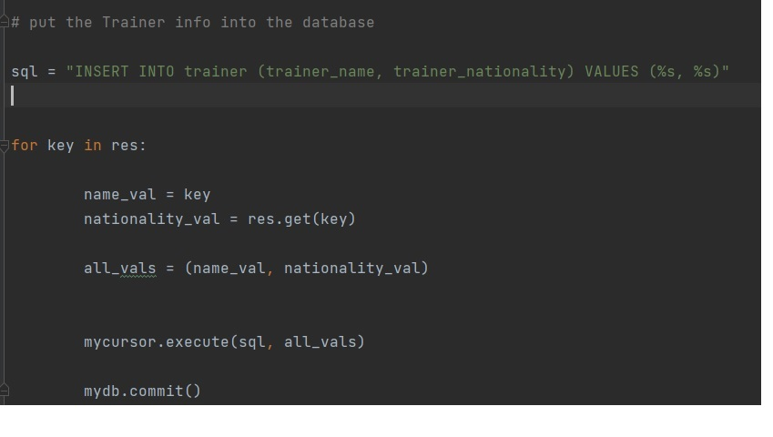
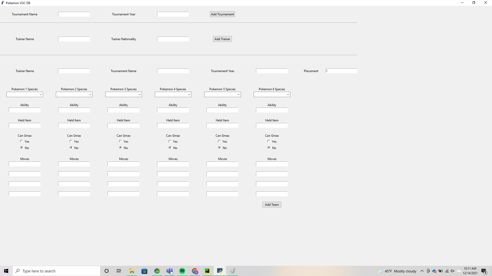
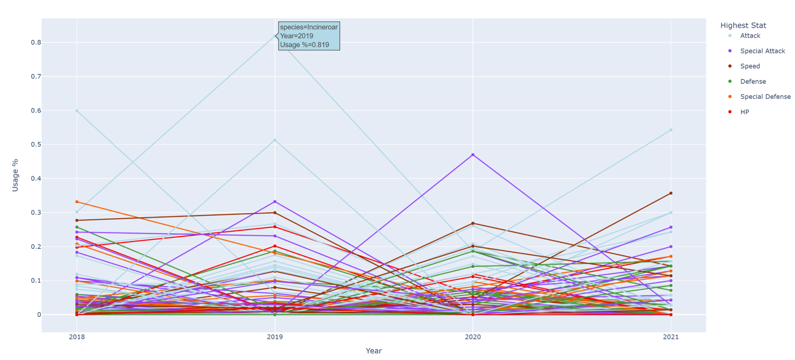

Pokémon Database
A database of Pokémon species and tournament results.
Problem
For a prospective competitor in Pokémon tournaments, it can be difficult to choose their team of Pokémon characters. It is to a competitor's advantage to choose a team that reflects current winning trends in competition. However, tournament results are not available in a consolidated, searchable format.
Solution
Database Design
Using SQL, we designed a database containing all Pokémon species, as well as the results from recent tournaments. For each species, we included information about its abilities and type. Each Pokémon team consists of unique individuals that are examples of their species. This structure allowed us to store both team and species data. Linking team members with their species characteristics allows for searches such as species frequency or ability frequency in tournaments. We could also observe trends in teams belonging to individual competitors.
Web Scraping
In order to populate the database, we used Python to scrape both tournament results and Pokémon species information from the web. During this process, we needed to account for the differing structure of the webpages we scraped. For each set of pages, we needed to find where the required information was located. One limitation of our data was that the specific stats for each team member were not available. Though we were able to apply the stats possessed by Pokémon species in general, we could not precisely determine how each team member developed their species' abilities.
We then inserted this information into our database tables using SQL. Pokémon information contained on the webpages was occasionally inaccurate, due to human error when the pages were updated. To prevent these errors from being transferred to the database, we established triggers to prevent inaccurate Pokémon from being added.
User Interface
We designed a user interface to allow the database to be updated. Users can enter information for new competitions, teams, and tournament results in the drop down menus, text entry fields, and radio buttons. This feature was important because new tournaments are held each year, and in order for the database to be most useful, it should include the latest competition results.
Data Analysis
Our data analysis showed that certain species were used more often than others, and that species with high Attack abilities were often favored by competitors. The overall competition trend shows that team composition is becoming more species-balanced over time. This may be because a balanced team gives greater competitive advantage, and/or because certain species have been modified to reduce their comparative advantage. One thing we learned during the course of this project is the importance of confirming the initial accuracy of one's data source. This is particularly imperative when gathering data from sources that may not have been reviewed for accuracy, such as crowd-sourced websites. The use of triggers to catch inaccuracies before the data is loaded is one solution, though this step requires an expert in the field to first identify the possible errors, so that a trigger can be written to prevent them.
